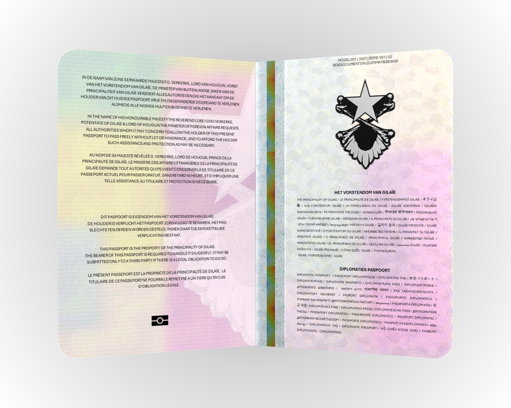
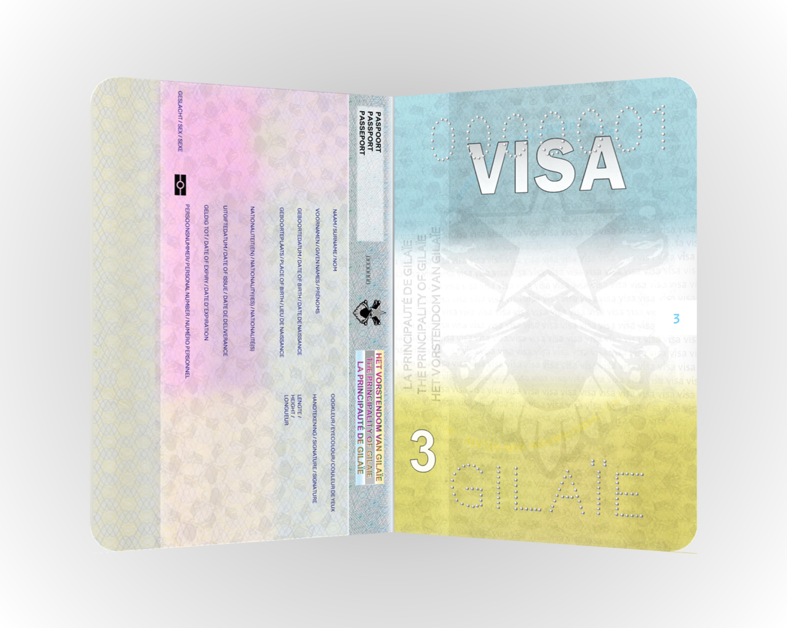

This is an official website of the Gilaïan Government.
How do you know?
Currently, there has not yet been a nice way established to ascertain that the website you are viewing is
legitimate. You are just going to have to trust your personal reasoning skills.
CITIZENSHIP
Gilaïan citizenship is desired by many, and rightfully so. Being a citizen of Gilaïe brings many interesting
benefits. Some of these are financial, whereas others include just having a government that actually cares is a
rare thing to come across these days.
We do care about our citizens. Day in day out the Government of the Principality of Gilaïe does their absolute
best to maintain our statehood in an orderly fashion.
Check below to see whether you qualify to be a citizen of Gilaïe.
Common Tasks
Take the CIEG now
The Civic Integration Exam for the Gilaïan citizenship (CIEG) consists
of 25 questions that evaluate the knowledge of the candidate and see whether they are suitable to
become a citizen of the Principality of Gilaïe. It is a requirement when applying for the Gilaïan
nationality.
Apply for Citizenship
Paired with the Gilaïan nationality comes a Gilaïan passport. Applying
for Gilaïan citizenship and applying for
a Gilaïan passport are the same. The application is an online form. Please
check the requirements below first to see whether you meet them before you meet them.
Requirements
Paired with the Gilaïan nationality comes a Gilaïan passport. Applying for Gilaïan citizenship and applying for
a Gilaïan passport are the same thing. The passport application can be filled in online. See the link above. To
qualify for a passport, you must meet the following requirements:
Have serious intentions regarding their citizenship application.
Be between 12 and 65 at the time of application.
Passed the Civil Integration Examination for the Gilaïan nationality (CIEG).
Be willing to demonstrate good moral character and have not breached any Gilaïan law or
immigration
rule.
Ready to acknowledge The Principality of Gilaïe as a real, functioning, legitimate state.
Prepared to pledge allegiance to His Majesty the Potentate (Vorst) of Gilaïe.
Be of sound mind, that is of full mental capacity.
Have at least a semi-reliable internet connection.
Have a lawful permanent residence in Gilaïe, the European Economic Area, The United
Kingdom of Great
Britain, The Free Republic of Verdis, The Principality of Sealand, or the Faroe islands.
Demonstrate loyalty to the principles of the Gilaïan Proclamation of Independence, signed
on June 10,
2021, by the Council of Ministers.
Be able to write, speak, read, and listen to basic English.
CIEG
CIEG stands for Civic Integration Exam for the Gilaïan citizenship. It is a test consisting out of 25 questions
that covers every aspect of being a Gilaïan citizen. We strongly recommend every person interested in taking the
CIEG to study well. The following will be assesed:
The English language
The Dutch language (not a hard requirement)
Basic history of Fugloy
Basic Gilaïan geography
Economic understanding of Gilaïe
Advanced political knowledge of Gilaïe
Basic knowledge of Gilaïan laws
Information about the passports of Gilaïe
The core language for the test is English. All questions in this assessment are multiple choice: one answer
will always be (most) correct. You can get a maximum of 60 points.
You will receive your score and grade not later than 24 hours after completing the test. Upon passing this test,
you can apply for the Gilaïan nationality and a passport.
You pass the test when you get 35 points or more.
Upon passing the CIEG, you are entitled to the Gilaïan nationality.
There is no time limit on the CIEG, but you may not use any supplementary devices or browse the internet whilst
you are taking the test.
It is up to you to decide when to take the CIEG. When you feel ready to start the test, simply follow the link
below. It is recommended that you use a desktop device for taking the exam.
The Gilaïan Passport
The Gilaïan government issues passports in the name of the Potentate. The design of the passports is heavily
regulated and established in document OVS21-0708-PGL-009 (ontwerpvaststelling paspoorten)/(design regulation of
passports). The passports have a nice dark bloo colour with golden lettering.

Inside of passport, first and second pages.

Inside of passport, holder and visa pages.
Regular passport for the Principality of Gilaïe.
Diplomatic passport for Gilaïan diplomats.
For Diplomats
Diplomats may be entitled to a diplomatic passport. If they suspect that they would need one for their daily
travels and/or professional they can make this clear on the Passport Application Form. The Potentate (Vorst)
will review the request. Please understand that because our Supreme Ruler needs to personally review your
application, waiting times might be a lot longer.